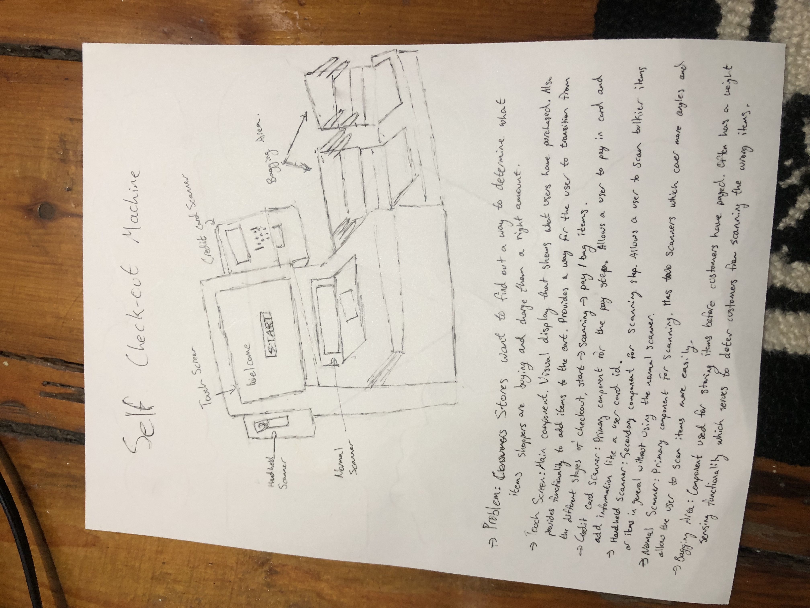
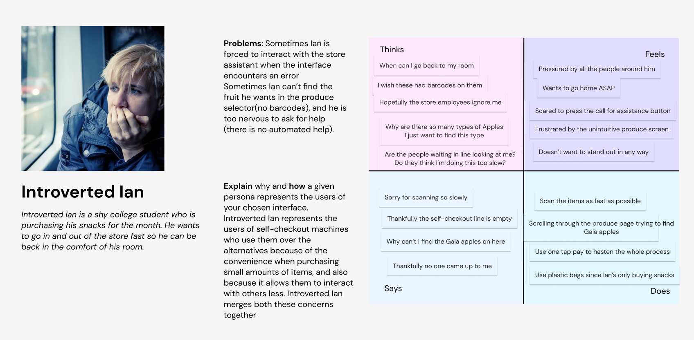
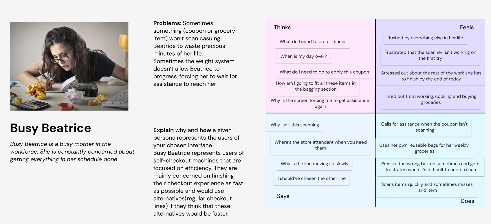
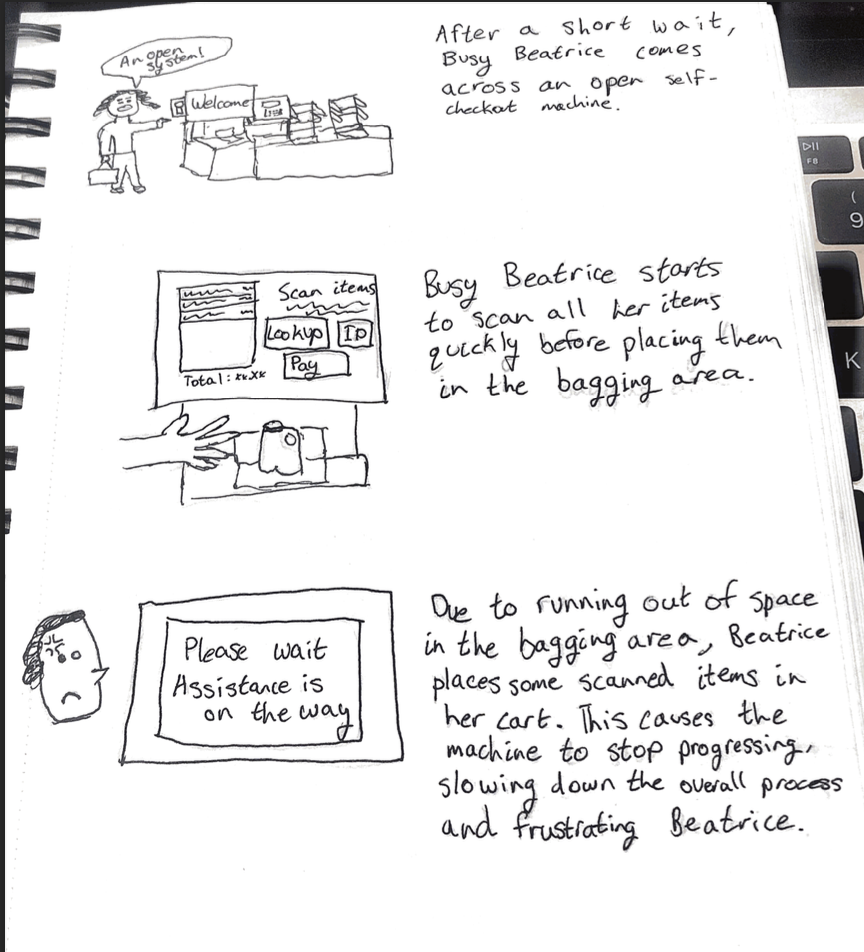
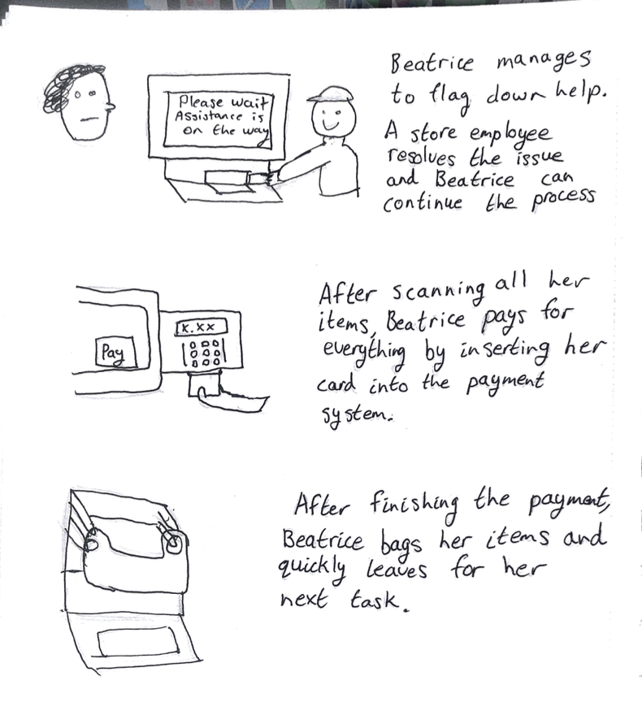

A deeper look at the grocery store checkout kiosk

Key Observations of Users
Some key observations made when observing the users were that most users
seemed very familiar with the interface. A very large majority of the users
seemed very practiced working through the different steps of the interface,
often not reading the prompts and instructions and quickly moving through
the process. Furthermore, users were able to successfully finish the process
most of the time w/o any external assistance. The few times that they did need
assistance occurred when the interface forced external intervention(interface
requested assistance for the user and stops progressing). Additionally, most
users followed the same user journey through the interface, scanning -> pay
with the bagging step taking place anytime between during scanning to after
paying. Some users(store workers) only interacted with part of the overall
process – helping regular users with the scanning step or paying step.
Questions to ask Users
What elements of the interface captures your eye first when first approaching this interface? Why?
Start Button to make sure that no one else is using the interface and that the machine is working
Bagging area to make sure that there are enough bags for the user to use
What elements of the interface are you mainly focused on when using this interface? Why?
Focused on the item and scanning to make sure the angle is right so the item properly scans
Focused on the screen to make sure the prices match what user expects
Smaller amount of focus on bagging to make sure it has room for all the items so the weights match and the system doesn’t complain
How familiar are you with this interface?(frequency of usage)
Everyday – worker there
Once a week – family
Once a month – College student on meal plan buying snacks
What are your main goals when using this interface? Are they usually met by this interface?
Helping solve customer problems with the interface as fast as possible
Scanning and paying for groceries accurately and quickly
What are your main considerations when deciding between using this interface vs other alternatives(checkout line)?
Line of self-checkout vs regular checkoutline
Convenience when scanning few items
Less human interaction
Are there any main issues with the interface? If so, what are they.
Unresponsive touch screen causing either nothing to happen, or too many things
to happen
Scanning issues causes items to not scan or scan twice
People using the interface slowly causing a line to form
Weight system doesn’t work sometimes
Personas


Storyboard

